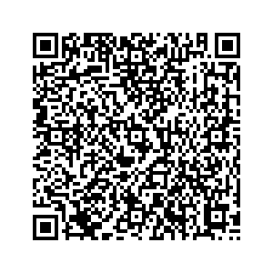

📷 Juega la misión en tu teléfonoEsto se pregunta en el examen:
Toda máquina que aprende pasa por los mismos seis pasos:
| Paso | Qué pasa |
|---|---|
| 📦 1. Datos | Se juntan muchísimos ejemplos: fotos, textos, sonidos, medidas. |
| 🏷️ 2. Etiquetas | Una persona escribe la respuesta correcta de cada uno. |
| 🏋️ 3. Entrenamiento | Los mira una y otra vez, y busca el patrón que los separa. |
| 🧪 4. Prueba | Se la examina con ejemplos que NUNCA vio. |
| ❌ 5. Error | Se cuenta cuántas falló. Ninguna acierta el cien por ciento. |
| 🔁 6. Se corrige | Se juntan los ejemplos que faltaban y se vuelve a entrenar. |
No todas aprenden igual. Estas tres hay que distinguirlas:
Una aplicación dice si una hoja está sana o con plaga. La entrenaron con maíz, frijol y café, y aprendió esto:
| Cultivo | Una hoja sana suya tiene… |
|---|---|
| 🌽 Maíz | hasta 1 mancha |
| 🫘 Frijol | hasta 1 mancha |
| ☕ Café | hasta 1 mancha |
| ❓ Un cultivo que nunca vio | usa el promedio de los que conoce: 1 mancha |
Le llegan estas hojas. Escribe qué contesta la máquina y si acierta:
| La hoja | Manchas | De verdad está… | La máquina dice | ¿Acierta? |
|---|---|---|---|---|
| 🌽 Maíz | 1 | sana | ||
| 🌽 Maíz | 3 | con plaga | ||
| ☕ Café | 1 | sana | ||
| 🍌 Plátano | 3 | sana (las hojas de plátano se rasgan con el viento) | ||
| 🍌 Plátano | 6 | con plaga |
Las dos que se califican:
Escribe S (supervisado), N (no supervisado) o R (por refuerzo):
Escribe D si es un dato y E si es una etiqueta:
| La foto de una hoja | La palabra «sana» escrita por una persona |
| El peso de una naranja | «Esto es un nance» |
| La grabación de una voz | «Esta hoja tiene plaga» |
Nadie te dice la regla. Mira los ejemplos que ya traen su respuesta y saca la regla. Después contesta los que faltan, como haría una máquina.
| Ejemplo | ¿Entra en el grupo? |
|---|---|
| 4 | ✅ entra |
| 7 | ❌ no entra |
| 10 | ✅ entra |
| 3 | ❌ no entra |
| 8 | ✅ entra |
| 15 | |
| 22 | |
| 9 | |
| 16 | |
| 5 |
La regla es:
Ahora la trampa. Estos cinco ejemplos también vienen con su respuesta:
2 ✅ entra · 4 ✅ entra · 6 ✅ entra · 9 ❌ no entra · 11 ❌ no entra
Son las mismas de la etapa 1, y las que vas a usar en noveno. Ahora ya sabes por qué.
| La regla | Por qué |
|---|---|
| 🔒 No le doy mis datos ni los de mi familia. | Ni nombre completo, ni dirección, ni teléfono, ni la escuela, ni fotos de otros niños. Lo que se manda a internet puede quedarse. |
| 🔎 No le creo sin comprobar. | Contesta igual de segura cuando sabe y cuando se lo inventa. El dato se busca en el libro o con quien lo sabe. |
| 🧑🏫 Si algo me asusta o me confunde, le aviso a una persona grande. | Un mensaje raro, una foto que no debería estar, alguien que te pide algo. Eso no se resuelve solo. |